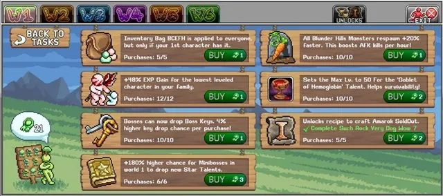
W1 Merit Shop 우선순위 (Blunder Hills)
레벨 14 이후 Grasslands Gary에게 말을 걸어 이 상점에 접근할 수 있습니다. 첫 번째 Merit Shop이지만 World 1의 간단한 활동으로 리본을 얻어 구매할 가치 있는 중요한 계정 업그레이드가 여럿 있습니다.
World 1 Merit Shop 우선순위 (순서대로):
| 업그레이드 순서 | 설명 | 비고 |
|---|---|---|
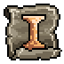 Amarok Equipment |
모루(Anvil)에서 Amarok 장비 잠금 해제 | 최대까지 완료하면서 Such Rock Very Dog Wow 도전을 완료할 때마다 구매하세요. Amarok 부츠, 바지, 상의가 처음 3개의 잠금 해제이며 초반 최고 방어구이므로 우선순위입니다. 나머지 도전들은 Chaos Amarok 처치가 필요한 장기 목표로, Chaotic Amarok Pendant와 다른 업그레이드용 추가 공적 리본을 잠금 해제합니다. |
| New Star Talents | World 1 미니보스(Baba Yaga, Dr Defecaus)가 JUST EXP와 Frothy Malk 스타 탤런트를 드롭할 확률 | 한 번만 구매하여 Just EXP와 Frothy Malk 특수 탤런트 드롭 기회를 잠금 해제하세요. 이 보스들은 매일 쉽게 파밍할 수 있으므로 단 한 번의 구매로 다른 업그레이드를 위해 포인트를 절약하세요. |
| Boss Keys | 보스 처치 시 보스 키 드롭 확률 | 추가 보스 키는 초반 유용한 아이템 파밍에 도움이 되며 모든 월드의 일일 보스 키 수급을 보완합니다. |
| Goblet of Hemoglobin | Goblet of Hemoglobin 스타 탤런트 잠금 해제 | 처음에 3포인트를 투자해 생존력의 기반을 마련한 뒤 Blunder Hills Respawn 이후에 최대로 올리세요. |
| Blunder Hills Respawn | World 1 몬스터 리스폰 증가 | 시간당 AFK 처치 수를 높여 World 1에서 얻는 경험치와 자원을 향상시킵니다. |
| +% EXP 획득 | 가장 낮은 레벨 캐릭터의 EXP 획득 증가 | 가장 낮은 레벨 캐릭터에만 적용되지만 새로 만든 캐릭터가 다른 캐릭터를 따라잡는 데 도움이 됩니다. |
| Inventory Bags | 첫 번째 캐릭터가 보유하면 모든 캐릭터의 인벤토리 가방 잠금 해제 | 처음 몇 포인트는 반복 퀘스트로 쉽게 초반 가방을 얻을 수 있으므로 특별히 유용하지 않습니다. 하지만 마지막 가방(E, F, H) 퀘스트라인은 상당히 길어서 이 업그레이드를 사용하면 모든 캐릭터에서 반복할 필요가 없습니다. |
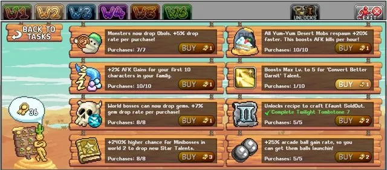
W2 Merit Shop 우선순위 (Yum-Yum Desert)
Desert Davey에게서 더 많은 도전과 구매 기회를 제공하는 두 번째 Merit Shop입니다. 레벨 35와 각 클래스 전용 무기를 제작하는 기본 퀘스트가 필요합니다. 연금술, 우편함, Efaunt 보스 관련 과제가 있습니다.
World 2 Merit Shop 우선순위 (순서대로):
| 업그레이드 순서 | 설명 | 비고 |
|---|---|---|
| Obol Drop Rate | 몬스터가 이제 Obols를 드롭하며 구매마다 추가 드롭률 | 처음에 한 번 구매하여 Obol 드롭을 잠금 해제한 뒤, Yum-Yum Desert Respawn이 최대가 된 후 최대로 올리세요. |
| New Star Talents | World 2 미니보스(Biggie Hours, Doot)가 Pulsation과 Cardiovascular 스타 탤런트를 드롭할 확률 | 한 번만 구매하여 드롭 기회를 잠금 해제하세요. 이 보스들도 쉽게 파밍 가능합니다. |
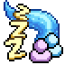 +% AFK 획득 |
각 캐릭터마다 AFK 획득 +2% | AFK 획득은 계정 전반에 폭넓게 적용되므로, 보유한 캐릭터 수만큼 구매하세요. 예를 들어 캐릭터가 5명이면 아래 업그레이드 전에 5번 구매하세요. |
| Arcade Ball Gains | 아케이드 볼 획득률 증가 | 아케이드 볼은 Gems와 자원 아이템의 유용한 출처입니다. 이 비율을 일찍 높이면 World 2 Arcade에서 사용할 볼이 더 많아집니다. |
| Gem Drop Rate | 월드 보스가 이제 Gems를 드롭하며 구매마다 확률 증가 | 잠재적인 Gems를 최대화하기 위해 이 업그레이드를 최대로 올릴 때까지 보스 키를 비축하세요. |
| Yum-Yum Desert Respawn | World 2 몬스터 리스폰 증가 | 진행, 경험치 획득, 몬스터 자원 수급 능력을 향상시킵니다. |
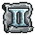 Efaunt Equipment |
모루에서 Efaunt 장비 잠금 해제 | Efaunt 장비는 유용하지만 처음에는 제작 비용이 비싸고 Amarok 장비보다 크게 강하지 않으므로 이 업그레이드는 나중으로 미룰 수 있습니다. |
 Boost Convert Better Darnit Boost Convert Better Darnit |
Boost Convert Better Darnit 스타 탤런트 잠금 해제 | 유용한 탤런트가 아니므로 필수가 아닙니다. |
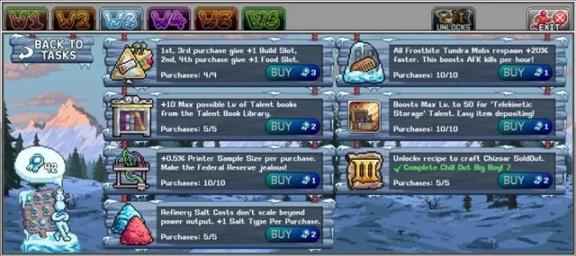
W3 Merit Shop 우선순위 (Frostbite Tundra)
차가운 Frostbite Tundra는 Iceland Irwin에게 말을 걸고 Frost Flakes에서 녹는 큐브를 수집하는 기본 퀘스트를 완료하면 잠금 해제됩니다. 소금 정제, 톱니바퀴, 신전, 인쇄, 숭배, 함정, W3 보스 처치 관련 도전들이 있습니다.
World 3 Merit Shop 우선순위 (순서대로):
| 업그레이드 순서 | 설명 | 비고 |
|---|---|---|
 Telekinetic Storage Telekinetic Storage |
Telekinetic Storage 스타 탤런트 잠금 해제 | 원격으로 아이템을 창고에 입금하는 능력을 잠금 해제하기 위해 1포인트 투자하세요. 이후 추가 운반 용량을 위해 마지막으로 최대로 올리세요. 비슷한 역할을 하는 Ram 컴패니언이 있다면 마지막까지 완전히 건너뛸 수 있습니다. |
| 빌드/음식 슬롯 | 1번째, 3번째 구매 시 빌드 슬롯 1개 잠금 해제, 2번째, 4번째 구매 시 음식 슬롯 1개 잠금 해제 | 빌드 슬롯은 동시에 더 많은 것을 건설할 수 있어 전반적인 건설 속도에 상당한 부스트를 줍니다. 음식 슬롯은 더 많은 체력 회복 또는 데미지 음식을 추가하여 맵 공략에 유용합니다. |
 Talent Book Library Talent Book Library |
탤런트 북 라이브러리에서 탤런트 북의 최대 레벨 증가 | 탤런트는 전투와 스킬의 주요 파워 출처이며, 이 업그레이드로 더 높은 탤런트 레벨을 얻을 수 있습니다. |
| Refinery Salt Costs | 정제소 소금 비용이 출력량을 초과하여 스케일되지 않음 | 정제소는 긴 과정이며 이 업그레이드는 소금 자원 비용 요구사항을 크게 줄여 진행 속도를 높입니다. 새 소금을 잠금 해제할 때마다 구매하세요(예: 주황색 Explosive salts 잠금 해제 시 1레벨, 파란색 Spontaneity Salts 잠금 해제 시 또 1레벨 등). |
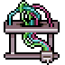 Printer Sample Size |
프린터 샘플 크기 증가 | World 3 프린터는 잠금 해제 후 자원 획득의 주요 출처이며, 이 프린터 샘플 크기 증가는 자원 획득을 최적화합니다. |
| Chizoar Equipment | 모루에서 Chizoar 장비 잠금 해제 | World 2와 유사하게 보스 장비가 크게 강해지지 않지만, 최대로 올리면 Chizaoars Caustic Scarf가 잠금 해제되어 그 자체로 강한 아이템이며 World 5에서 강력한 Divine Scarf로 업그레이드됩니다. |
| Frostbite Tundra Respawn | World 3 몬스터 리스폰 증가 | 리스폰은 AFK 획득 증가에 유용하지만, 다른 World 3 옵션들이 너무 강해서 이 옵션은 가장 마지막으로 남겨두세요. |
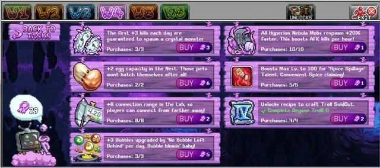
W4 Merit Shop 우선순위 (Hyperion Nebula)
W4 Merit Shop은 Hyperion Nebula의 Nebula Neddy에게 말을 걸고 이 월드의 첫 번째 3개 몬스터에서 보라색 버섯 모자, TV 리모컨, 반쯤 먹은 도넛을 획득하는 기본 퀘스트 완료 후 잠금 해제됩니다. 요리, 브리딩, 실험실, 업적, W4 보스 처치 관련 도전들이 있습니다.
World 4 Merit Shop 우선순위 (순서대로):
| 업그레이드 순서 | 설명 | 비고 |
|---|---|---|
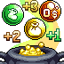 No Bubble Left Behind |
매일 자동으로 레벨업하는 World 2 연금술 버블 수 증가 | 연금술은 강력한 메커니즘이며 이 업그레이드를 빨리 얻을수록 Idleon 생활 전반에 걸쳐 더 많은 무료 버블 레벨을 얻습니다. 비용이 비싸지만 가치 있습니다. 이것을 작동시키려면 일일 리셋 시간에 해당 실험실 노드가 활성화되어 있어야 하며, Idleon에 로그인하는 날에만 활성화됩니다. |
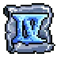 Troll Equipment |
모루에서 Troll 장비 잠금 해제 | Troll 장비는 종종 Amarok 방어구에서의 첫 번째 주요 업그레이드이며 미래 월드 장비 레시피의 일부입니다. 해당 트롤 도전을 완료함에 따라 잠금 해제하고 다음 도전 달성을 기다리는 동안 아래 업그레이드를 구매하세요. |
 Spice Spillage Spice Spillage |
Spice Spillage 스타 탤런트 잠금 해제 | 탤런트를 잠금 해제하기 위해 1포인트를 투자한 뒤 마지막으로 최대로 올리세요. 이는 World 4 브리딩에서 향신료를 수집하는 데 도움이 되는 유틸리티 탤런트로, 수동으로 수집하는 것보다 시간을 절약하고 더 많은 향신료를 얻을 수 있습니다. |
| Lab Connection Range | 실험실 메인프레임에 연결 범위 추가 | 유용한 실험실 연결 범위(캐릭터가 노드나 보석에 연결할 수 있는 거리, 캐릭터 간 범위가 아닌)의 출처가 제한적입니다. |
| Egg Capacity | 브리딩 스킬의 알 용량 추가 | 알이 많을수록 추가 브리딩 경험치와 펫 획득 기회가 생깁니다. 비용이 비싸지만 브리딩을 상당히 진행하거나 Gem Shop에서 구매한 후에야 추가 알을 얻을 수 있으므로 공적 상점 포인트 투자 가치가 있습니다. |
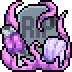 Hyperion Nebula Respawn |
World 4 몬스터 리스폰 증가 | 맵 진행, 경험치 획득, 몬스터 자원 생성 능력을 향상시킵니다. 강력하지만 위의 옵션들만큼 강하지 않습니다. Jelly Cube 맵의 Capital P NPC의 퀘스트가 클래스와 데미지에 따라 이 업그레이드로 약간 어려워지므로 해당 퀘스트를 완료할 때까지 투자를 미루는 것을 고려하세요. |
| Crystal Monster Spawn | 매일 첫 번째 처치 시 크리스탈 몬스터 스폰 | 희귀 크리스탈 몬스터에서 드롭을 파밍하는 데 도움이 되지만, 크리스탈 스폰율이 있고 Active(직접 플레이)로 잠깐 플레이하면 자연스럽게 스폰시킬 수 있으므로 다른 옵션과 비교해 강하지 않습니다. |
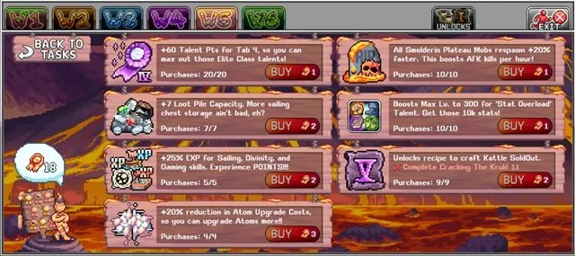
W5 Merit Shop 우선순위 (Smolderin' Plateau)
W5 Merit Shop은 Smolderin' Plateau의 Lava Larry에게 짧은 퀘스트 후 접근 가능하며, Sailing, 보트 업그레이드, Divinity, Gaming, 슬랩 관련 도전들이 있습니다.
World 5 Merit Shop 우선순위 (순서대로):
| 업그레이드 순서 | 설명 | 비고 |
|---|---|---|
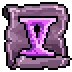 Kattlecruk Equipment |
모루에서 Kattlecruk 장비 잠금 해제 | 각 캐릭터용 무기와 현재 가장 강력한 펜던트인 Divine Scarf를 포함하는 강력한 장비 세트입니다. |
| Sailing Loot Pile Capacity | 항해 루트 더미 용량 추가 | 더 많은 항해 전리품을 저장하는 능력은 Idleon 세션 사이의 스킬 진행을 개선하고 강력한 유물을 잠금 해제하는 속도를 높입니다. |
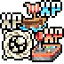 스킬 EXP |
Sailing, Divinity, Gaming 경험치 획득 증가 | 스킬 경험치는 World 5의 모든 스킬에 중요합니다. 가장 중요한 것은 Divinity 경험치 향상으로, Divinity 제단 밖에서도 경험치를 얻을 수 있는 레벨 40에 도달하는 시간을 단축시킵니다. |
| Smolderin' Plateau Respawn | World 5 몬스터 리스폰 증가 | 과거 월드와 마찬가지로 포털 요구사항 달성이나 몬스터 재료 수집에 추가 파워를 더합니다. |
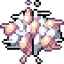 Atom Upgrade Cost |
World 3 Atom Collider의 원자 업그레이드 비용 감소 | W3 원자 충돌기의 일부 비용은 엄청나게 비싸며, 이로 인해 수십만 개의 원자를 절약할 수 있습니다. 강력한 원자 관련 부스트에 더 빨리 접근하고 연금술 향상을 위해 원자를 절약합니다. |
| Tab 4 Talent Points | 엘리트 클래스용 탤런트 포인트 구매마다 +3 (Tab 4) | W5 신규 플레이어라면 위의 옵션들보다 이 탤런트 포인트에 먼저 끌릴 수 있지만, 소중한 W5 공적 포인트를 여기에 쓰는 것보다 캐릭터 레벨을 올리는 데 집중하는 것이 더 낫습니다. |
 Stat Overload Stat Overload |
Stat Overload 스타 탤런트 잠금 해제 | Stat Overload는 캐릭터에게 잠재적으로 300 모든 스탯을 제공하여 데미지와 스킬 효과를 높일 수 있지만, W5와 W6을 진행하면서 이 수치는 빠르게 미미해집니다. 또한 플레이어가 보유하지 않을 수 있는 스타 탤런트 포인트의 대규모 투자가 필요하므로 마지막으로 남겨두세요. |
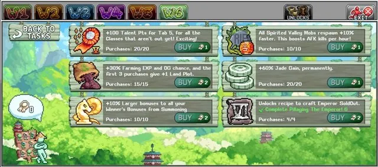
W6 Merit Shop 우선순위 (Spirited Valley)
W6 Merit Shop은 Spirit Sungmin이 운영하며, 접근하기 전에 첫 번째 3개 월드 몬스터의 아이템이 필요합니다. 이 정신 테마 월드의 도전들은 작물, 잠입, 소환, 월드 보스를 기반으로 합니다.
World 6 Merit Shop 우선순위 (순서대로):
| 업그레이드 순서 | 설명 | 비고 |
|---|---|---|
| Emperor Equipment | 모루에서 Emperor 장비 잠금 해제 | 또 다른 강력한 보스 장비 세트로 우선순위입니다. 아직 보스에 도달하지 않았다면 다른 옵션으로 넘어가기 전에 최소 8개의 공적 상점 포인트를 비축하세요. |
| 파밍 부스트 | 처음 3번 구매 시 땅 구획 +1, 파밍 EXP 및 OG 확률도 증가 | 처음 3번의 구매는 파밍 진행을 배가시키는 중요한 땅 구획을 제공하므로 강력합니다. 파밍 경험치와 OG 확률도 유용하지만 일부 다른 공적 상점 옵션만큼 강하지 않습니다. 처음 3번 구매 후 W6 리스폰 이후 최대로 올리세요. |
| Summoning Winner Bonuses | 소환 승리에서 더 큰 보너스 | Summoning에는 유용한 계정 부스트가 많으며, 이는 그것에 대한 단순하지만 강력한 부스트입니다. |
| Spirited Valley Respawn | World 6 몬스터 리스폰 증가 | 다른 월드와 마찬가지로 리스폰 부스트는 포털 요구사항 달성이나 캐릭터 레벨 또는 몬스터 드롭 획득에 적합합니다. |
| Jade Gain | 잠입 Jade 획득 증가 | Jade 획득은 이 World 6 스킬과 Jade Emporium 업그레이드를 진행하는 데 도움이 되는 추가 잠입 업그레이드로 변환됩니다. 하지만 위의 옵션들과 비교하면 영향이 낮습니다. |
| 탤런트 포인트 | 마스터 클래스용 탤런트 포인트 구매마다 +5 (Tab 5) | 이 탤런트 포인트는 마스터 클래스 파워를 확장하는 데 유용하지만 캐릭터 레벨만으로도 쉽게 얻을 수 있습니다. |